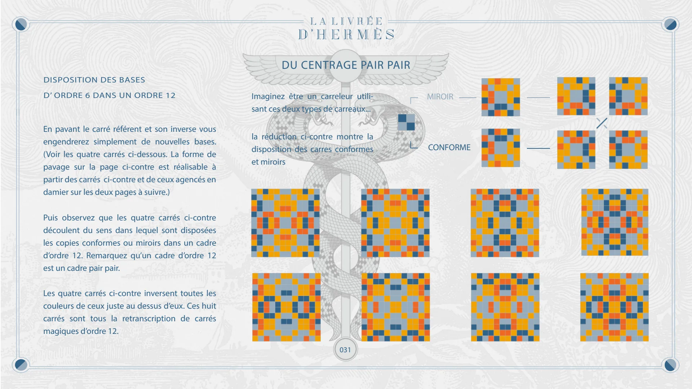

L'arithmogéométrie construit les carrés magiques par une méthode géométrique plutôt qu'arithmétique : chaque nombre y est posé comme une figure, dérivée de la croix ansée, et l'ensemble se transcrit directement en armure Jacquard. Le terme est proposé par Anibal Edelberto Amiot dans La Livrée d'Hermès (2026).
Un exemple : l'ordre 12 du livre
La planche 031 du traité montre huit carrés de 12 × 12 cases. Quatre sont des carrés d'ordre 6 posés en cadre, en copies conformes ou en miroirs ; les quatre autres en inversent les couleurs. Le livre les appelle « la retranscription de carrés magiques d'ordre 12 ». Chaque case est une figure colorée, et c'est ce dessin qui se tisse tel quel sur le métier Jacquard.

Un carré magique d'ordre 12 a pour constante 12 × 145 / 2 = 870. Le livre en compte 64 par assemblage.
Les résultats clés, avec leur statut
- 2 croix ansées d'ordre 6 — vérifié (journal du dépôt).
- 256 carrés solaires d'ordre 6, 128 par croix — vérifié (journal du dépôt).
- 64 carrés magiques d'ordre 12 par assemblage, constante 870 — vérifié (journal du dépôt).
- 360 calques : 15 familles d'axes × 4 natures × 6 niveaux — vérifié (relancé en CI).
- Les 256 motifs qui ont une page ne dessinent que 224 grilles distinctes — vérifié (relancé en CI).
Chaque ligne se relit dans chiffres et sources et dans resultats-etablis.json, avec le script qui la reproduit et la ligne qu'il imprime.
Pour aller plus loin : le livre, le lexique, chiffres et sources, les travaux déposés, le carré magique d'ordre 6.